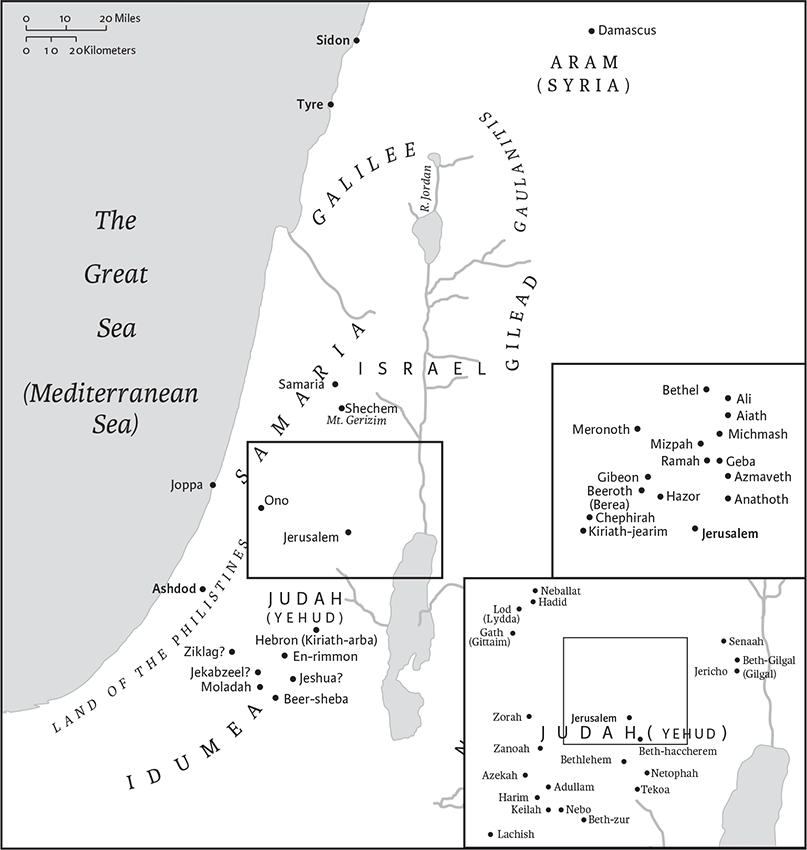

Ezra
2 Esdras in Greek
Name and Location in Canon
The books of Ezra and Nehemiah form a single book in early Hebrew and Greek manuscripts of the Bible, but are separated into two in later Christian tradition. The books are named for two principal Jewish leaders of the fifth century bce. Ezra the priest and scribe is featured in chs 7–10 of the book that bears his name and in Neh 8–9; Nehemiah is prominent in the book that bears his name.
In Jewish Bibles, Ezra‐Nehemiah is placed in the third division of the canon, the Writings, where it is either the last book or the next to last (before Chronicles). In most Christian canons, Ezra and Nehemiah as two books are located among the historical books following Chronicles. They precede Esther in the Protestant canon Old Testaments and Tobit in the Roman Catholic canon. For the Greek book of 1 Esdras, which includes sections of both Ezra and Nehemiah, see Introduction to 1 Esdras.
Historical Background
The unified book of Ezra‐Nehemiah (called “Esdras b” in Greek manuscripts) describes the return of exiles from Babylonia after 538 bce, and the reconstruction of Jewish life in Judah under Persian imperial rule between 538 and approximately 420. It depicts a massive return from exile, authorized by the edict of the Persian king Cyrus, and a lengthy process of rebuilding Jerusalem and the Temple. It illustrates how Israel reconstituted itself as the “people of the Book,” with scripture, specifically the first five books of the Bible (the Pentateuch, known in Ezra‐Nehemiah as the Law of Moses, the Law of God/the Lord, or the Law), becoming authoritative for communal and personal life. These developments extend through the reign of several Persian kings and under Jewish leaders: Sheshbazzar, Zerubbabel, Jeshua, Ezra, and Nehemiah. The book shows that the Temple and its personnel gained unprecedented powers and the community developed new criteria for identity and membership.
Cyrus’s edict permitting the return to Judah sets the agenda for the entire book of Ezra‐Nehemiah, launching a national and religious rebirth and reconstruction. In response, the people rebuild the Temple, the community, and Jerusalem. The edict also establishes official Persian legitimation of Jewish life in the Persian province of Yehud (the name for Judah in Aramaic and other sources), claiming harmony between Persian imperial policies and the will of Israel’s God, a position that pervades Ezra‐Nehemiah.
Although recent Persian period archaeology of Judah and the newly published tablets referring to al yahudu (a Judean town) in Babylon shed fresh light on the period, it is still difficult to reconstruct the actual history. Based on additional information from the books of Haggai and Zechariah, many scholars think that the return and rebuilding took place in four or more steps. In this reconstruction, Ezra‐Nehemiah states that the earliest returnees, led by Sheshbazzar in 538 bce, began to rebuild the Temple but for some reason abandoned the project. Second, a later group of exiles, under the leadership of Zerubbabel and Jeshua, resumed rebuilding during the reign of the Persian king Darius I (522–486) and completed the Temple reconstruction in 515. Third, a group led by Ezra in 458 during the reign of Artaxerxes I (465–424) reestablished the Torah, the law of Moses, as the authority for Jews in Yehud. Finally, a group led by Nehemiah beginning in 445, later in the reign of Artaxerxes I, restored Jerusalem’s walls and repopulated Jerusalem. Some scholars hypothesize that Ezra’s return and his religious innovations, took place only after Nehemiah’s political improvements. But most favor the reconstruction given above, which follows the biblical sequence and which will be used in the annotations. Archaeological studies indicate only limited development in the province of Judah during the Persian period. This raises questions about the extent and effectiveness of the reconstruction that Ezra‐Nehemiah describes and the historical accuracy of this biblical account.
Date of Composition, Literary History, and Structure
Ezra‐Nehemiah was probably composed in Judah after 400 bce. It shares some themes and vocabulary with Chronicles, another Persian‐period book. Ezra 1.1–3 overlaps the end of Chronicles, 2 Chr 36.22–23, which is why many earlier scholars thought it to be part of Chronicles. However, the books use different vocabulary and have different ideologies, and were most likely composed by different authors (see Introduction to 1 Chronicles, pp. 583–85). Ezra‐Nehemiah also shares elements with several later books in antiquity under the name of Ezra that are preserved in the Apocrypha and Pseudepigrapha, including 1 Esdras, which contains all of Ezra 1–10 and Nehemiah 8 (see 703–05), 2 Esdras, and 4 Ezra (in Vulgate Appendix).
Ezra‐Nehemiah has a complicated literary history. It incorporates first‐person memoirs or autobiographical sources of both Ezra (Ezra 7.27–9.15) and Nehemiah (Neh 1.1–7.5; 12.27–13.31), and letters of various officials from different periods, along with historical narrative, edited over a few decades. Although most of Ezra‐Nehemiah is written in Hebrew, some sections (Ezra 4.6–6.18 and 7.12–26) are in Aramaic, the lingua franca of the Persian Empire.
The various sources of Ezra‐Nehemiah have been combined carefully, resulting in a coherent structure despite sharp transitions. The work opens with God’s promise and Cyrus’s decree urging the Temple to be rebuilt in Jerusalem (Ezra 1.1–4). It continues with exiled Israel’s response (Ezra 1.5–Neh 7.73), culminating in celebration of reconstruction (Neh 8–13). Israel’s enthusiastic response is first summed up (Ezra 1.5–11). Then, framed in a repeated list of returnees (Ezra 2 and Neh 7.6–73), the response unfolds as three stages of return and reconstruction. Stage One describes the reconstruction of the Temple in 538–515 bce (Ezra 3–6); Stage Two, the mission of Ezra and the formation of the community according to the law of Moses in 458 (Ezra 7–10), and Stage Three, the rebuilding of Jerusalem under Nehemiah’s leadership in 445–444 (Neh 1.1–7.5). After the second list of returnees, the work concludes with celebration of renewal and reconstruction (Neh 8–13). This last section begins with the reading and implementation of the law of Moses (Neh 8); the confession and commitment of the people (Neh 9–10); the repopulation of the city and review of the people (Neh 11.1–12.26); and a celebration and purification (Neh 12.27–13.3). The very end is a coda in which Nehemiah recounts some of his reforms and invokes God’s remembrance (Neh 13.4–31).
Interpretation
The returned exiles were not only concerned with restoring preexilic institutions, such as the altar and the Temple, and restoring the city; they also adapted to changed circumstances by establishing new religious practices granting decisive authority to the book of the law/Torah, which likely reached its familiar form in the late postexilic period. To the author, the returned exiles were a godly remnant with a renewed commitment to perpetuate the covenantal teachings that kept them distinct. Being a minority within the vast polytheistic and multicultural Persian empire, they sought to protect their ethnic and religious identity by establishing rigorous religious boundaries between themselves and their neighbors. The author was worried that the community might repeat the mistakes that caused the exile, including intermarriage, and that a new destruction would follow.
Through its structure and narrative, Ezra‐Nehemiah emphasizes the role of the people themselves in rebuilding, as well as the power of authoritative documents. It also conveys the expansion of holiness from the Temple to Jerusalem as a whole.
Tamara Cohn Eskenazi
1 In the first year of King Cyrus of Persia, in order that the word of the Lord by the mouth of Jeremiah might be accomplished, the Lord stirred up the spirit of King Cyrus of Persia so that he sent a herald throughout all his kingdom, and also in a written edict declared:
2“Thus says King Cyrus of Persia: The Lord, the God of heaven, has given me all the kingdoms of the earth, and he has charged me to build him a house at Jerusalem in Judah. 3Any of those among you who are of his people—may their God be with them!—are now permitted to go up to Jerusalem in Judah, and rebuild the house of the Lord, the God of Israel—he is the God who is in Jerusalem; 4and let all survivors, in whatever place they reside, be assisted by the people of their place with silver and gold, with goods and with animals, besides freewill offerings for the house of God in Jerusalem.”
5The heads of the families of Judah and Benjamin, and the priests and the Levites— everyone whose spirit God had stirred—got ready to go up and rebuild the house of the Lord in Jerusalem. 6All their neighbors aided them with silver vessels, with gold, with goods, with animals, and with valuable gifts, besides all that was freely offered. 7King Cyrus himself brought out the vessels of the house of the Lord that Nebuchadnezzar had carried away from Jerusalem and placed in the house of his gods. 8King Cyrus of Persia had them released into the charge of Mithredath the treasurer, who counted them out to Sheshbazzar the prince of Judah. 9And this was the inventory: gold basins, thirty; silver basins, one thousand; knives,a twenty‐nine; 10gold bowls, thirty; other silver bowls, four hundred ten; other vessels, one thousand; 11the total of the gold and silver vessels was five thousand four hundred. All these Sheshbazzar brought up, when the exiles were brought up from Babylonia to Jerusalem.
2 Now these were the people of the province who came from those captive exiles whom King Nebuchadnezzar of Babylon had carried captive to Babylonia; they returned to Jerusalem and Judah, all to their own towns. 2They came with Zerubbabel, Jeshua, Nehemiah, Seraiah, Reelaiah, Mordecai, Bilshan, Mispar, Bigvai, Rehum, and Baanah.
The number of the Israelite people: 3the descendants of Parosh, two thousand one hundred seventy‐two. 4Of Shephatiah, three hundred seventy‐two. 5Of Arah, seven hundred seventy‐five. 6Of Pahath‐moab, namely the descendants of Jeshua and Joab, two thousand eight hundred twelve. 7Of Elam, one thousand two hundred fifty‐four. 8Of Zattu, nine hundred forty‐five. 9Of Zaccai, seven hundred sixty. 10Of Bani, six hundred forty‐two. 11Of Bebai, six hundred twentythree. 12Of Azgad, one thousand two hundred twenty‐two. 13Of Adonikam, six hundred sixty‐six. 14Of Bigvai, two thousand fifty‐six. 15Of Adin, four hundred fifty‐four. 16Of Ater, namely of Hezekiah, ninety‐eight. 17Of Bezai, three hundred twenty‐three. 18Of Jorah, one hundred twelve. 19Of Hashum, two hundred twenty‐three. 20Of Gibbar, ninety‐five. 21Of Bethlehem, one hundred twenty‐three. 22The people of Netophah, fifty‐six. 23Of Anathoth, one hundred twenty‐eight. 24The descendants of Azmaveth, forty‐two. 25Of Kiriatharim, Chephirah, and Beeroth, seven hundred forty‐three. 26Of Ramah and Geba, six hundred twenty‐one. 27The people of Michmas, one hundred twenty‐two. 28Of Bethel and Ai, two hundred twenty‐three. 29The descendants of Nebo, fifty‐two. 30Of Magbish, one hundred fifty‐six. 31Of the other Elam, one thousand two hundred fifty‐four. 32Of Harim, three hundred twenty. 33Of Lod, Hadid, and Ono, seven hundred twenty‐five. 34Of Jericho, three hundred forty‐five. 35Of Senaah, three thousand six hundred thirty.
36The priests: the descendants of Jedaiah, of the house of Jeshua, nine hundred seventy‐three. 37Of Immer, one thousand fifty‐two. 38Of Pashhur, one thousand two hundred forty‐seven. 39Of Harim, one thousand seventeen.
40The Levites: the descendants of Jeshua and Kadmiel, of the descendants of Hodaviah, seventy‐four. 41The singers: the descendants of Asaph, one hundred twentyeight. 42The descendants of the gatekeepers: of Shallum, of Ater, of Talmon, of Akkub, of Hatita, and of Shobai, in all one hundred thirty‐nine.
43The temple servants: the descendants of Ziha, Hasupha, Tabbaoth, 44Keros, Siaha, Padon, 45Lebanah, Hagabah, Akkub, 46Hagab, Shamlai, Hanan, 47Giddel, Gahar, Reaiah, 48Rezin, Nekoda, Gazzam, 49Uzza, Paseah, Besai, 50Asnah, Meunim, Nephisim, 51Bakbuk, Hakupha, Harhur, 52Bazluth, Mehida, Harsha, 53Barkos, Sisera, Temah, 54Neziah, and Hatipha.
55The descendants of Solomon’s servants: Sotai, Hassophereth, Peruda, 56Jaalah, Darkon, Giddel, 57Shephatiah, Hattil, Pochereth‐hazzebaim, and Ami.
58All the temple servants and the descendants of Solomon’s servants were three hundred ninety‐two.
59The following were those who came up from Tel‐melah, Tel‐harsha, Cherub, Addan, and Immer, though they could not prove their families or their descent, whether they belonged to Israel: 60the descendants of Delaiah, Tobiah, and Nekoda, six hundred fifty‐two. 61Also, of the descendants of the priests: the descendants of Habaiah, Hakkoz, and Barzillai (who had married one of the daughters of Barzillai the Gileadite, and was called by their name). 62These looked for their entries in the genealogical records, but they were not found there, and so they were excluded from the priesthood as unclean; 63the governor told them that they were not to partake of the most holy food, until there should be a priest to consult Urim and Thummim.
64The whole assembly together was fortytwo thousand three hundred sixty, 65besides their male and female servants, of whom there were seven thousand three hundred thirty‐seven; and they had two hundred male and female singers. 66They had seven hundred thirty‐six horses, two hundred forty‐five mules, 67four hundred thirty‐five camels, and six thousand seven hundred twenty donkeys.
68As soon as they came to the house of the Lord in Jerusalem, some of the heads of families made freewill offerings for the house of God, to erect it on its site. 69According to their resources they gave to the building fund sixty‐one thousand darics of gold, five thousand minas of silver, and one hundred priestly robes.
70The priests, the Levites, and some of the people lived in Jerusalem and its vicinity;a and the singers, the gatekeepers, and the temple servants lived in their towns, and all Israel in their towns.
3 When the seventh month came, and the Israelites were in the towns, the people gathered together in Jerusalem. 2Then Jeshua son of Jozadak, with his fellow priests, and Zerubbabel son of Shealtiel with his kin set out to build the altar of the God of Israel, to offer burnt offerings on it, as prescribed in the law of Moses the man of God. 3They set up the altar on its foundation, because they were in dread of the neighboring peoples, and they offered burnt offerings upon it to the Lord, morning and evening. 4And they kept the festival of booths,b as prescribed, and offered the daily burnt offerings by number according to the ordinance, as required for each day, 5and after that the regular burnt offerings, the offerings at the new moon and at all the sacred festivals of the Lord, and the offerings of everyone who made a freewill offering to the Lord. 6From the first day of the seventh month they began to offer burnt offerings to the Lord. But the foundation of the temple of the Lord was not yet laid. 7So they gave money to the masons and the carpenters, and food, drink, and oil to the Sidonians and the Tyrians to bring cedar trees from Lebanon to the sea, to Joppa, according to the grant that they had from King Cyrus of Persia.
8In the second year after their arrival at the house of God at Jerusalem, in the second month, Zerubbabel son of Shealtiel and Jeshua son of Jozadak made a beginning, together with the rest of their people, the priests and the Levites and all who had come to Jerusalem from the captivity. They appointed the Levites, from twenty years old and upward, to have the oversight of the work on the house of the Lord. 9And Jeshua with his sons and his kin, and Kadmiel and his sons, Binnui and Hodaviaha along with the sons of Henadad, the Levites, their sons and kin, together took charge of the workers in the house of God.
10When the builders laid the foundation of the temple of the Lord, the priests in their vestments were stationed to praise the Lord with trumpets, and the Levites, the sons of Asaph, with cymbals, according to the directions of King David of Israel; 11and they sang responsively, praising and giving thanks to the Lord,
“For he is good,
for his steadfast love endures forever toward Israel.”
And all the people responded with a great shout when they praised the Lord, because the foundation of the house of the Lord was laid. 12But many of the priests and Levites and heads of families, old people who had seen the first house on its foundations, wept with a loud voice when they saw this house, though many shouted aloud for joy, 13so that the people could not distinguish the sound of the joyful shout from the sound of the people’s weeping, for the people shouted so loudly that the sound was heard far away.
4 When the adversaries of Judah and Benjamin heard that the returned exiles were building a temple to the Lord, the God of Israel, 2they approached Zerubbabel and the heads of families and said to them, “Let us build with you, for we worship your God as you do, and we have been sacrificing to him ever since the days of King Esar‐haddon of Assyria who brought us here.” 3But Zerubbabel, Jeshua, and the rest of the heads of families in Israel said to them, “You shall have no part with us in building a house to our God; but we alone will build to the Lord, the God of Israel, as King Cyrus of Persia has commanded us.”
4Then the people of the land discouraged the people of Judah, and made them afraid to build, 5and they bribed officials to frustrate their plan throughout the reign of King Cyrus of Persia and until the reign of King Darius of Persia.
6In the reign of Ahasuerus, in his accession year, they wrote an accusation against the inhabitants of Judah and Jerusalem.
7And in the days of Artaxerxes, Bishlam and Mithredath and Tabeel and the rest of their associates wrote to King Artaxerxes of Persia; the letter was written in Aramaic and translated.a 8Rehum the royal deputy and Shimshai the scribe wrote a letter against Jerusalem to King Artaxerxes as follows 9(then Rehum the royal deputy, Shimshai the scribe, and the rest of their associates, the judges, the envoys, the officials, the Persians, the people of Erech, the Babylonians, the people of Susa, that is, the Elamites, 10and the rest of the nations whom the great and noble Osnappar deported and settled in the cities of Samaria and in the rest of the province Beyond the River wrote—and now 11this is a copy of the letter that they sent):
“To King Artaxerxes: Your servants, the people of the province Beyond the River, send greeting. And now 12may it be known to the king that the Jews who came up from you to us have gone to Jerusalem. They are rebuilding that rebellious and wicked city; they are finishing the walls and repairing the foundations. 13Now may it be known to the king that, if this city is rebuilt and the walls finished, they will not pay tribute, custom, or toll, and the royal revenue will be reduced. 14Now because we share the salt of the palace and it is not fitting for us to witness the king’s dishonor, therefore we send and inform the king, 15so that a search may be made in the annals of your ancestors. You will discover in the annals that this is a rebellious city, hurtful to kings and provinces, and that sedition was stirred up in it from long ago. On that account this city was laid waste. 16We make known to the king that, if this city is rebuilt and its walls finished, you will then have no possession in the province Beyond the River.”
17The king sent an answer: “To Rehum the royal deputy and Shimshai the scribe and the rest of their associates who live in Samaria and in the rest of the province Beyond the River, greeting. And now 18the letter that you sent to us has been read in translation before me. 19So I made a decree, and someone searched and discovered that this city has risen against kings from long ago, and that rebellion and sedition have been made in it. 20Jerusalem has had mighty kings who ruled over the whole province Beyond the River, to whom tribute, custom, and toll were paid. 21Therefore issue an order that these people be made to cease, and that this city not be rebuilt, until I make a decree. 22Moreover, take care not to be slack in this matter; why should damage grow to the hurt of the king?”
23Then when the copy of King Artaxerxes’ letter was read before Rehum and the scribe Shimshai and their associates, they hurried to the Jews in Jerusalem and by force and power made them cease. 24At that time the work on the house of God in Jerusalem stopped and was discontinued until the second year of the reign of King Darius of Persia.
5 Now the prophets, Haggaia and Zechariah son of Iddo, prophesied to the Jews who were in Judah and Jerusalem, in the name of the God of Israel who was over them. 2Then Zerubbabel son of Shealtiel and Jeshua son of Jozadak set out to rebuild the house of God in Jerusalem; and with them were the prophets of God, helping them.
3At the same time Tattenai the governor of the province Beyond the River and Shetharbozenai and their associates came to them and spoke to them thus, “Who gave you a decree to build this house and to finish this structure?” 4Theya also asked them this, “What are the names of the men who are building this building?” 5But the eye of their God was upon the elders of the Jews, and they did not stop them until a report reached Darius and then answer was returned by letter in reply to it.
6The copy of the letter that Tattenai the governor of the province Beyond the River and Shethar‐bozenai and his associates the envoys who were in the province Beyond the River sent to King Darius; 7they sent him a report, in which was written as follows: “To Darius the king, all peace! 8May it be known to the king that we went to the province of Judah, to the house of the great God. It is being built of hewn stone, and timber is laid in the walls; this work is being done diligently and prospers in their hands. 9Then we spoke to those elders and asked them, ‘Who gave you a decree to build this house and to finish this structure?’ 10We also asked them their names, for your information, so that we might write down the names of the men at their head. 11This was their reply to us: ‘We are the servants of the God of heaven and earth, and we are rebuilding the house that was built many years ago, which a great king of Israel built and finished. 12But because our ancestors had angered the God of heaven, he gave them into the hand of King Nebuchadnezzar of Babylon, the Chaldean, who destroyed this house and carried away the people to Babylonia. 13However, King Cyrus of Babylon, in the first year of his reign, made a decree that this house of God should be rebuilt. 14Moreover, the gold and silver vessels of the house of God, which Nebuchadnezzar had taken out of the temple in Jerusalem and had brought into the temple of Babylon, these King Cyrus took out of the temple of Babylon, and they were delivered to a man named Sheshbazzar, whom he had made governor. 15He said to him, “Take these vessels; go and put them in the temple in Jerusalem, and let the house of God be rebuilt on its site.” 16Then this Sheshbazzar came and laid the foundations of the house of God in Jerusalem; and from that time until now it has been under construction, and it is not yet finished.’ 17And now, if it seems good to the king, have a search made in the royal archives there in Babylon, to see whether a decree was issued by King Cyrus for the rebuilding of this house of God in Jerusalem. Let the king send us his pleasure in this matter.”
6 Then King Darius made a decree, and they searched the archives where the documents were stored in Babylon. 2But it was in Ecbatana, the capital in the province of Media, that a scroll was found on which this was written: “A record. 3In the first year of his reign, King Cyrus issued a decree: Concerning the house of God at Jerusalem, let the house be rebuilt, the place where sacrifices are offered and burnt offerings are brought;b its height shall be sixty cubits and its width sixty cubits, 4with three courses of hewn stones and one course of timber; let the cost be paid from the royal treasury. 5Moreover, let the gold and silver vessels of the house of God, which Nebuchadnezzar took out of the temple in Jerusalem and brought to Babylon, be restored and brought back to the temple in Jerusalem, each to its place; you shall put them in the house of God.”
6“Now you, Tattenai, governor of the province Beyond the River, Shethar‐bozenai, and you, their associates, the envoys in the province Beyond the River, keep away; 7let the work on this house of God alone; let the governor of the Jews and the elders of the Jews rebuild this house of God on its site. 8Moreover I make a decree regarding what you shall do for these elders of the Jews for the rebuilding of this house of God: the cost is to be paid to these people, in full and without delay, from the royal revenue, the tribute of the province Beyond the River. 9Whatever is needed—young bulls, rams, or sheep for burnt offerings to the God of heaven, wheat, salt, wine, or oil, as the priests in Jerusalem require—let that be given to them day by day without fail, 10so that they may offer pleasing sacrifices to the God of heaven, and pray for the life of the king and his children. 11Furthermore I decree that if anyone alters this edict, a beam shall be pulled out of the house of the perpetrator, who then shall be impaled on it. The house shall be made a dunghill. 12May the God who has established his name there overthrow any king or people that shall put forth a hand to alter this, or to destroy this house of God in Jerusalem. I, Darius, make a decree; let it be done with all diligence.”
13Then, according to the word sent by King Darius, Tattenai, the governor of the province Beyond the River, Shethar‐bozenai, and their associates did with all diligence what King Darius had ordered. 14So the elders of the Jews built and prospered, through the prophesying of the prophet Haggai and Zechariah son of Iddo. They finished their building by command of the God of Israel and by decree of Cyrus, Darius, and King Artaxerxes of Persia; 15and this house was finished on the third day of the month of Adar, in the sixth year of the reign of King Darius.
16The people of Israel, the priests and the Levites, and the rest of the returned exiles, celebrated the dedication of this house of God with joy. 17They offered at the dedication of this house of God one hundred bulls, two hundred rams, four hundred lambs, and as a sin offering for all Israel, twelve male goats, according to the number of the tribes of Israel. 18Then they set the priests in their divisions and the Levites in their courses for the service of God at Jerusalem, as it is written in the book of Moses.
19On the fourteenth day of the first month the returned exiles kept the passover. 20For both the priests and the Levites had purified themselves; all of them were clean. So they killed the passover lamb for all the returned exiles, for their fellow priests, and for themselves. 21It was eaten by the people of Israel who had returned from exile, and also by all who had joined them and separated themselves from the pollutions of the nations of the land to worship the Lord, the God of Israel. 22With joy they celebrated the festival of unleavened bread seven days; for the Lord had made them joyful, and had turned the heart of the king of Assyria to them, so that he aided them in the work on the house of God, the God of Israel.
7 After this, in the reign of King Artaxerxes of Persia, Ezra son of Seraiah, son of Azariah, son of Hilkiah, 2son of Shallum, son of Zadok, son of Ahitub, 3son of Amariah, son of Azariah, son of Meraioth, 4son of Zerahiah, son of Uzzi, son of Bukki, 5son of Abishua, son of Phinehas, son of Eleazar, son of the chief priest Aaron— 6this Ezra went up from Babylonia. He was a scribe skilled in the law of Moses that the Lord the God of Israel had given; and the king granted him all that he asked, for the hand of the Lord his God was upon him.
7Some of the people of Israel, and some of the priests and Levites, the singers and gatekeepers, and the temple servants also went up to Jerusalem, in the seventh year of King Artaxerxes. 8They came to Jerusalem in the fifth month, which was in the seventh year of the king. 9On the first day of the first month the journey up from Babylon was begun, and on the first day of the fifth month he came to Jerusalem, for the gracious hand of his God was upon him. 10For Ezra had set his heart to study the law of the Lord, and to do it, and to teach the statutes and ordinances in Israel.
11This is a copy of the letter that King Artaxerxes gave to the priest Ezra, the scribe, a scholar of the text of the commandments of the Lord and his statutes for Israel: 12“Artaxerxes, king of kings, to the priest Ezra, the scribe of the law of the God of heaven: Peace.a And now 13I decree that any of the people of Israel or their priests or Levites in my kingdom who freely offers to go to Jerusalem may go with you. 14For you are sent by the king and his seven counselors to make inquiries about Judah and Jerusalem according to the law of your God, which is in your hand, 15and also to convey the silver and gold that the king and his counselors have freely offered to the God of Israel, whose dwelling is in Jerusalem, 16with all the silver and gold that you shall find in the whole province of Babylonia, and with the freewill offerings of the people and the priests, given willingly for the house of their God in Jerusalem. 17With this money, then, you shall with all diligence buy bulls, rams, and lambs, and their grain offerings and their drink offerings, and you shall offer them on the altar of the house of your God in Jerusalem. 18Whatever seems good to you and your colleagues to do with the rest of the silver and gold, you may do, according to the will of your God. 19The vessels that have been given you for the service of the house of your God, you shall deliver before the God of Jerusalem. 20And whatever else is required for the house of your God, which you are responsible for providing, you may provide out of the king’s treasury.
21“I, King Artaxerxes, decree to all the treasurers in the province Beyond the River: Whatever the priest Ezra, the scribe of the law of the God of heaven, requires of you, let it be done with all diligence, 22up to one hundred talents of silver, one hundred cors of wheat, one hundred bathsb of wine, one hundred bathsb of oil, and unlimited salt. 23Whatever is commanded by the God of heaven, let it be done with zeal for the house of the God of heaven, or wrath will come upon the realm of the king and his heirs. 24We also notify you that it shall not be lawful to impose tribute, custom, or toll on any of the priests, the Levites, the singers, the doorkeepers, the temple servants, or other servants of this house of God.
25“And you, Ezra, according to the Godgiven wisdom you possess, appoint magistrates and judges who may judge all the people in the province Beyond the River who know the laws of your God; and you shall teach those who do not know them. 26All who will not obey the law of your God and the law of the king, let judgment be strictly executed on them, whether for death or for banishment or for confiscation of their goods or for imprisonment.”
27Blessed be the Lord, the God of our ancestors, who put such a thing as this into the heart of the king to glorify the house of the Lord in Jerusalem, 28and who extended to me steadfast love before the king and his counselors, and before all the king’s mighty officers. I took courage, for the hand of the Lord my God was upon me, and I gathered leaders from Israel to go up with me.
8 These are their family heads, and this is the genealogy of those who went up with me from Babylonia, in the reign of King Artaxerxes: 2Of the descendants of Phinehas, Gershom. Of Ithamar, Daniel. Of David, Hattush, 3of the descendants of Shecaniah. Of Parosh, Zechariah, with whom were registered one hundred fifty males. 4Of the descendants of Pahath‐moab, Eliehoenai son of Zerahiah, and with him two hundred males. 5Of the descendants of Zattu,a Shecaniah son of Jahaziel, and with him three hundred males. 6Of the descendants of Adin, Ebed son of Jonathan, and with him fifty males. 7Of the descendants of Elam, Jeshaiah son of Athaliah, and with him seventy males. 8Of the descendants of Shephatiah, Zebadiah son of Michael, and with him eighty males. 9Of the descendants of Joab, Obadiah son of Jehiel, and with him two hundred eighteen males. 10Of the descendants of Bani,b Shelomith son of Josiphiah, and with him one hundred sixty males. 11Of the descendants of Bebai, Zechariah son of Bebai, and with him twentyeight males. 12Of the descendants of Azgad, Johanan son of Hakkatan, and with him one hundred ten males. 13Of the descendants of Adonikam, those who came later, their names being Eliphelet, Jeuel, and Shemaiah, and with them sixty males. 14Of the descendants of Bigvai, Uthai and Zaccur, and with them seventy males.
15I gathered them by the river that runs to Ahava, and there we camped three days. As I reviewed the people and the priests, I found there none of the descendants of Levi. 16Then I sent for Eliezer, Ariel, Shemaiah, Elnathan, Jarib, Elnathan, Nathan, Zechariah, and Meshullam, who were leaders, and for Joiarib and Elnathan, who were wise, 17and sent them to Iddo, the leader at the place called Casiphia, telling them what to say to Iddo and his colleagues the temple servants at Casiphia, namely, to send us ministers for the house of our God. 18Since the gracious hand of our God was upon us, they brought us a man of discretion, of the descendants of Mahli son of Levi son of Israel, namely Sherebiah, with his sons and kin, eighteen; 19also Hashabiah and with him Jeshaiah of the descendants of Merari, with his kin and their sons, twenty; 20besides two hundred twenty of the temple servants, whom David and his officials had set apart to attend the Levites. These were all mentioned by name.
21Then I proclaimed a fast there, at the river Ahava, that we might deny ourselvesc before our God, to seek from him a safe journey for ourselves, our children, and all our possessions. 22For I was ashamed to ask the king for a band of soldiers and cavalry to protect us against the enemy on our way, since we had told the king that the hand of our God is gracious to all who seek him, but his power and his wrath are against all who forsake him. 23So we fasted and petitioned our God for this, and he listened to our entreaty.
24Then I set apart twelve of the leading priests: Sherebiah, Hashabiah, and ten of their kin with them. 25And I weighed out to them the silver and the gold and the vessels, the offering for the house of our God that the king, his counselors, his lords, and all Israel there present had offered; 26I weighed out into their hand six hundred fifty talents of silver, and one hundred silver vessels worth . . . talents,a and one hundred talents of gold, 27twenty gold bowls worth a thousand darics, and two vessels of fine polished bronze as precious as gold. 28And I said to them, “You are holy to the Lord, and the vessels are holy; and the silver and the gold are a freewill offering to the Lord, the God of your ancestors. 29Guard them and keep them until you weigh them before the chief priests and the Levites and the heads of families in Israel at Jerusalem, within the chambers of the house of the Lord.” 30So the priests and the Levites took over the silver, the gold, and the vessels as they were weighed out, to bring them to Jerusalem, to the house of our God.
31Then we left the river Ahava on the twelfth day of the first month, to go to Jerusalem; the hand of our God was upon us, and he delivered us from the hand of the enemy and from ambushes along the way. 32We came to Jerusalem and remained there three days. 33On the fourth day, within the house of our God, the silver, the gold, and the vessels were weighed into the hands of the priest Meremoth son of Uriah, and with him was Eleazar son of Phinehas, and with them were the Levites, Jozabad son of Jeshua and Noadiah son of Binnui. 34The total was counted and weighed, and the weight of everything was recorded.
35At that time those who had come from captivity, the returned exiles, offered burnt offerings to the God of Israel, twelve bulls for all Israel, ninety‐six rams, seventy‐seven lambs, and as a sin offering twelve male goats; all this was a burnt offering to the Lord. 36They also delivered the king’s commissions to the king’s satraps and to the governors of the province Beyond the River; and they supported the people and the house of God.
9 After these things had been done, the officials approached me and said, “The people of Israel, the priests, and the Levites have not separated themselves from the peoples of the lands with their abominations, from the Canaanites, the Hittites, the Perizzites, the Jebusites, the Ammonites, the Moabites, the Egyptians, and the Amorites. 2For they have taken some of their daughters as wives for themselves and for their sons. Thus the holy seed has mixed itself with the peoples of the lands, and in this faithlessness the officials and leaders have led the way.” 3When I heard this, I tore my garment and my mantle, and pulled hair from my head and beard, and sat appalled. 4Then all who trembled at the words of the God of Israel, because of the faithlessness of the returned exiles, gathered around me while I sat appalled until the evening sacrifice.
5At the evening sacrifice I got up from my fasting, with my garments and my mantle torn, and fell on my knees, spread out my hands to the Lord my God, 6and said,
“O my God, I am too ashamed and embarrassed to lift my face to you, my God, for our iniquities have risen higher than our heads, and our guilt has mounted up to the heavens. 7From the days of our ancestors to this day we have been deep in guilt, and for our iniquities we, our kings, and our priests have been handed over to the kings of the lands, to the sword, to captivity, to plundering, and to utter shame, as is now the case. 8But now for a brief moment favor has been shown by the Lord our God, who has left us a remnant, and given us a stake in his holy place, in order that hea may brighten our eyes and grant us a little sustenance in our slavery. 9For we are slaves; yet our God has not forsaken us in our slavery, but has extended to us his steadfast love before the kings of Persia, to give us new life to set up the house of our God, to repair its ruins, and to give us a wall in Judea and Jerusalem.
10“And now, our God, what shall we say after this? For we have forsaken your commandments, 11which you commanded by your servants the prophets, saying, ‘The land that you are entering to possess is a land unclean with the pollutions of the peoples of the lands, with their abominations. They have filled it from end to end with their uncleanness. 12Therefore do not give your daughters to their sons, neither take their daughters for your sons, and never seek their peace or prosperity, so that you may be strong and eat the good of the land and leave it for an inheritance to your children forever.’ 13After all that has come upon us for our evil deeds and for our great guilt, seeing that you, our God, have punished us less than our iniquities deserved and have given us such a remnant as this, 14shall we break your commandments again and intermarry with the peoples who practice these abominations? Would you not be angry with us until you destroy us without remnant or survivor? 15O Lord, God of Israel, you are just, but we have escaped as a remnant, as is now the case. Here we are before you in our guilt, though no one can face you because of this.”
10 While Ezra prayed and made confession, weeping and throwing himself down before the house of God, a very great assembly of men, women, and children gathered to him out of Israel; the people also wept bitterly. 2Shecaniah son of Jehiel, of the descendants of Elam, addressed Ezra, saying, “We have broken faith with our God and have married foreign women from the peoples of the land, but even now there is hope for Israel in spite of this. 3So now let us make a covenant with our God to send away all these wives and their children, according to the counsel of my lord and of those who tremble at the commandment of our God; and let it be done according to the law. 4Take action, for it is your duty, and we are with you; be strong, and do it.” 5Then Ezra stood up and made the leading priests, the Levites, and all Israel swear that they would do as had been said. So they swore.

Judah and its neighbors in Ezra‐Nehemiah.
6Then Ezra withdrew from before the house of God, and went to the chamber of Jehohanan son of Eliashib, where he spent the night.a He did not eat bread or drink water, for he was mourning over the faithlessness of the exiles. 7They made a proclamation throughout Judah and Jerusalem to all the returned exiles that they should assemble at Jerusalem, 8and that if any did not come within three days, by order of the officials and the elders all their property should be forfeited, and they themselves banned from the congregation of the exiles.
9Then all the people of Judah and Benjamin assembled at Jerusalem within the three days; it was the ninth month, on the twentieth day of the month. All the people sat in the open square before the house of God, trembling because of this matter and because of the heavy rain. 10Then Ezra the priest stood up and said to them, “You have trespassed and married foreign women, and so increased the guilt of Israel. 11Now make confession to the Lord the God of your ancestors, and do his will; separate yourselves from the peoples of the land and from the foreign wives.” 12Then all the assembly answered with a loud voice, “It is so; we must do as you have said. 13But the people are many, and it is a time of heavy rain; we cannot stand in the open. Nor is this a task for one day or for two, for many of us have transgressed in this matter. 14Let our officials represent the whole assembly, and let all in our towns who have taken foreign wives come at appointed times, and with them the elders and judges of every town, until the fierce wrath of our God on this account is averted from us.” 15Only Jonathan son of Asahel and Jahzeiah son of Tikvah opposed this, and Meshullam and Shabbethai the Levites supported them.
16Then the returned exiles did so. Ezra the priest selected men,b heads of families, according to their families, each of them designated by name. On the first day of the tenth month they sat down to examine the matter. 17By the first day of the first month they had come to the end of all the men who had married foreign women.
18There were found of the descendants of the priests who had married foreign women, of the descendants of Jeshua son of Jozadak and his brothers: Maaseiah, Eliezer, Jarib, and Gedaliah. 19They pledged themselves to send away their wives, and their guilt offering was a ram of the flock for their guilt. 20Of the descendants of Immer: Hanani and Zebadiah. 21Of the descendants of Harim: Maaseiah, Elijah, Shemaiah, Jehiel, and Uzziah. 22Of the descendants of Pashhur: Elioenai, Maaseiah, Ishmael, Nethanel, Jozabad, and Elasah.
23Of the Levites: Jozabad, Shimei, Kelaiah (that is, Kelita), Pethahiah, Judah, and Eliezer. 24Of the singers: Eliashib. Of the gatekeepers: Shallum, Telem, and Uri.
25And of Israel: of the descendants of Parosh: Ramiah, Izziah, Malchijah, Mijamin, Eleazar, Hashabiah,a and Benaiah. 26Of the descendants of Elam: Mattaniah, Zechariah, Jehiel, Abdi, Jeremoth, and Elijah. 27Of the descendants of Zattu: Elioenai, Eliashib, Mattaniah, Jeremoth, Zabad, and Aziza. 28Of the descendants of Bebai: Jehohanan, Hananiah, Zabbai, and Athlai. 29Of the descendants of Bani: Meshullam, Malluch, Adaiah, Jashub, Sheal, and Jeremoth. 30Of the descendants of Pahath‐moab: Adna, Chelal, Benaiah, Maaseiah, Mattaniah, Bezalel, Binnui, and Manasseh. 31Of the descendants of Harim: Eliezer, Isshijah, Malchijah, Shemaiah, Shimeon, 32Benjamin, Malluch, and Shemariah. 33Of the descendants of Hashum: Mattenai, Mattattah, Zabad, Eliphelet, Jeremai, Manasseh, and Shimei. 34Of the descendants of Bani: Maadai, Amram, Uel, 35Benaiah, Bedeiah, Cheluhi, 36Vaniah, Meremoth, Eliashib, 37Mattaniah, Mattenai, and Jaasu. 38Of the descendants of Binnui:b Shimei, 39Shelemiah, Nathan, Adaiah, 40Machnadebai, Shashai, Sharai, 41Azarel, Shelemiah, Shemariah, 42Shallum, Amariah, and Joseph. 43Of the descendants of Nebo: Jeiel, Mattithiah, Zabad, Zebina, Jaddai, Joel, and Benaiah. 44All these had married foreign women, and they sent them away with their children.c